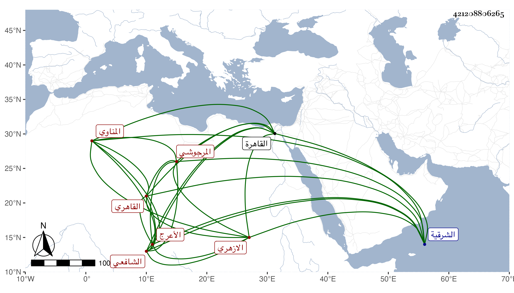

0902Sakhawi.DawLamic.ITO20230111-ara1.EIS1600.421208806265
Biography ID: 421208806265
450
حسن بن علي بن محمد البدر المناوي ثم القاهري الازهري ثم المرجوشي الشافعي الأعرج . ولد تقريبا سنة ثلاث عشرة وثمانمائة بالمنية المجاورة لصافور من الشرقية ، وقدم القاهرة فلازم في الفقه العلم البلقيني ، وقرأ عليه المنهاج الفرعي بتمامه قراءة بحث وتحقيق وفهم وتدقيق ، وأخذ الفرائض والحساب وغيرهما عن ابن المجدي والشهاب السيرجي وأذنوا له في الاقراء والافتاء والعربية وغيرها عن العز عبد السلام البغدادي وشيخنا ابن خضر والشريف الحنفي شيخ الجوهرية ، وسمع على شيخنا مسند الشافعي إلا اليسير وغير ذلك ، وتميز في الفقه والفرائض والحساب واختص بصحبة أبي العدل قاسم البلقيني بحيث كان أحد قراء التقاسيم عنده وانتفع كل منهما بالآخر فصاحب لترجمة بما كان يسديه إليه من المعروف والاخر بمذاكرته ونحوها وبواسطة سكناه بمدرسة البلقيني كان يؤدب فتح الدين بن تقي الدين وحكى أنه من شدة خوفه من ضربه أشهد على نفسه بأمر يستوجب القتل ليخلص من ضربه بحيث احتيج إلى حقن دمه والحكم باسلامه وبعده لزم الاقامة بمسجد بطرف سوق أمير الجيوش متقنعا بمعلومه في البيبرسية والجمالية وما لعله يصل إليه من المبرات سيما ممن يقرىء أولادهم من التجار كابن عليبة ونحوهم وإذا وسع الله وسع مع تردد الطلبة إليه حتى انتفع به جماعة كثيرون طبقة بعد أخرى ، وحج في البحر وجاور بعض سنة ، وكان ممن أخذ عنه الشهاب بن عبد السلام والكمال الحسيني الطويل وابن العز السنباطي والشرف بن روق والجمال عبيد الضاني ، ولم ينفك عن ملازمة المسجد المشار إليه ولا عن المزاح والكلمات اليابسة ويقال إنه تجرأ على الشيخ سليم ، وله همة عالية وفتوة وكرم وقد طرقه السراق في مسجده ليلا وأخذوا له من الثياب والنقد ما لم يكن يظن به وما سلمه من القتل إلا الله ، وتحول عنه أياما وأمسك بعضهم ولم يحصل منهم على طائل ولكن بره الخليفة وكاتب السر والاستادار وغيرهم ثم عاد وتزايد عجزه وهرمه ، ومع ذلك لم ينفك عن الاقراء ثم عجز ، وسافر مع أخته إلى بلاده ثم عاد .
